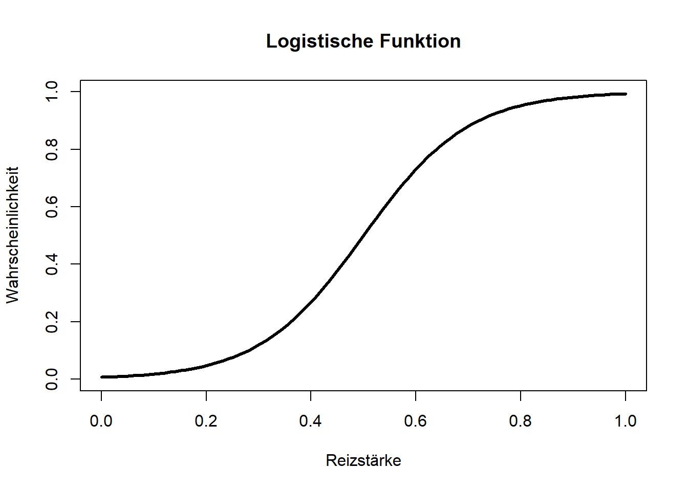
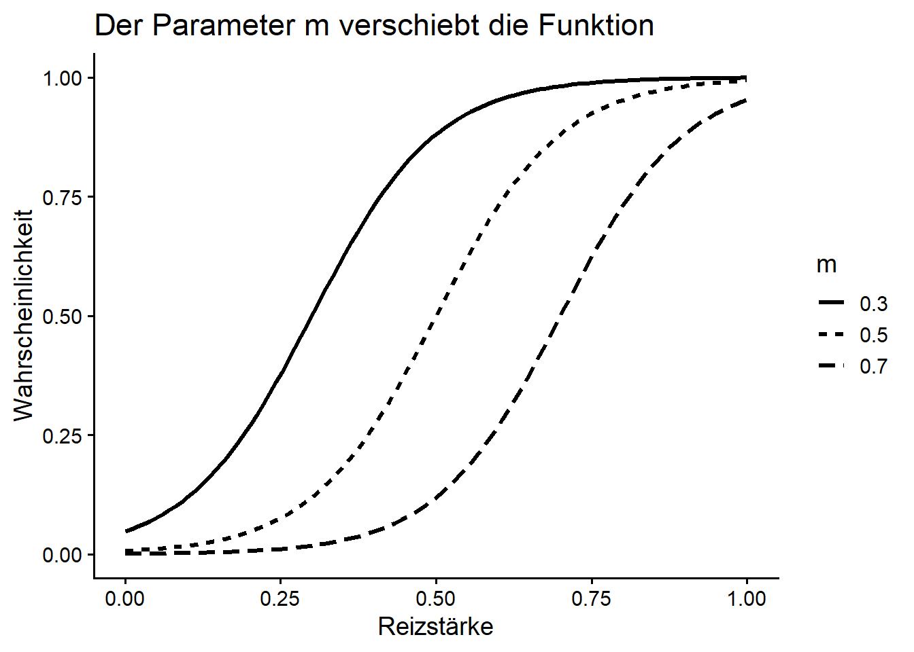
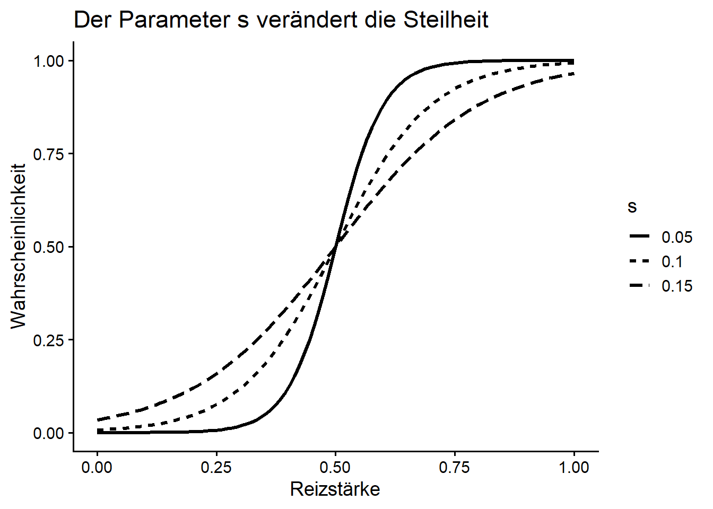
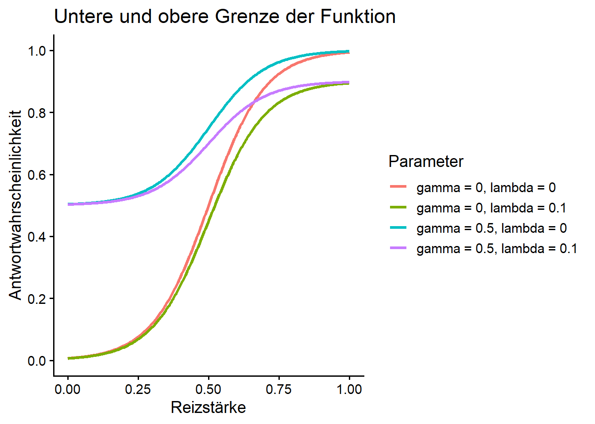
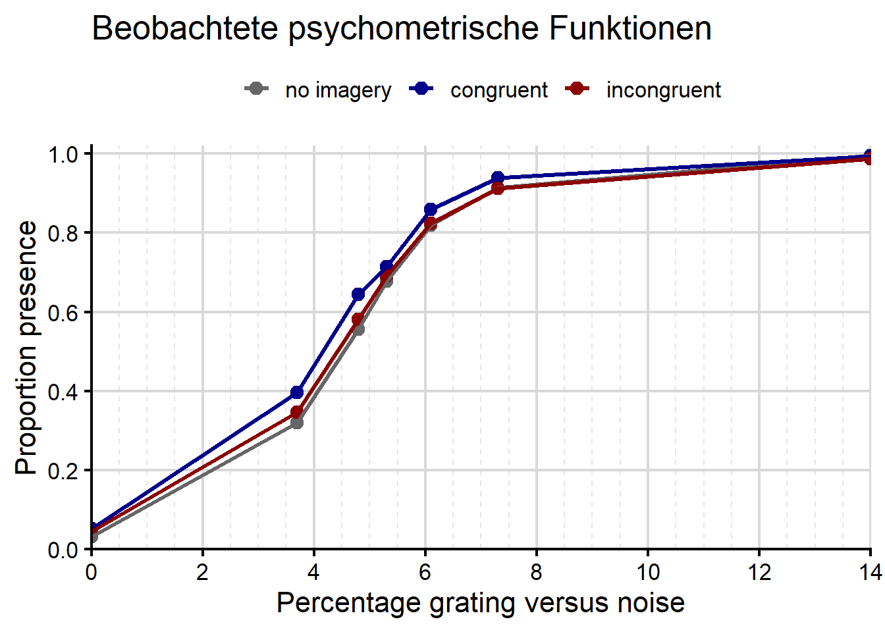
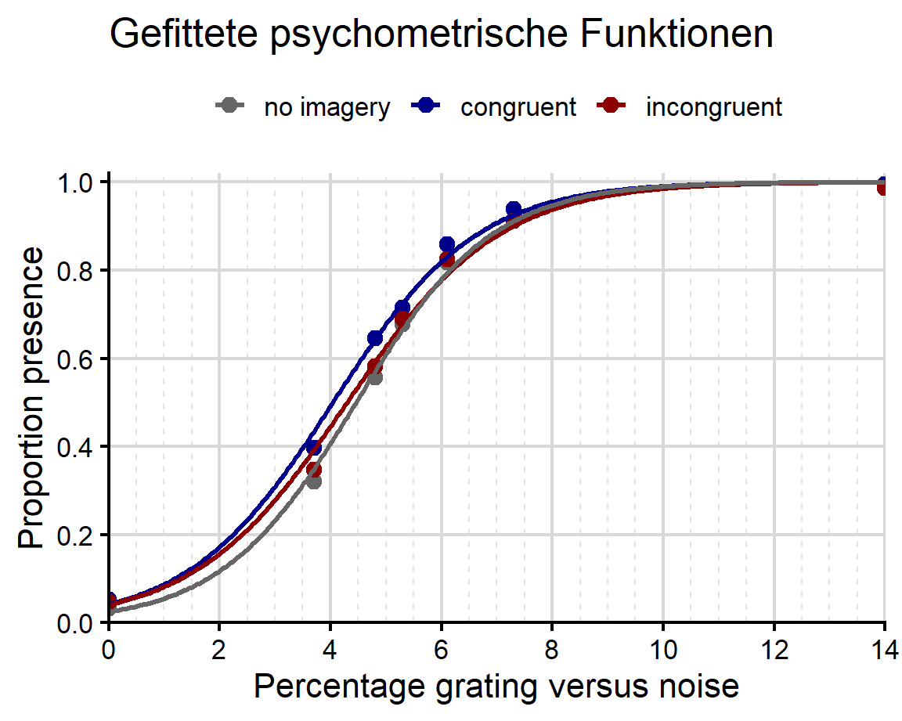
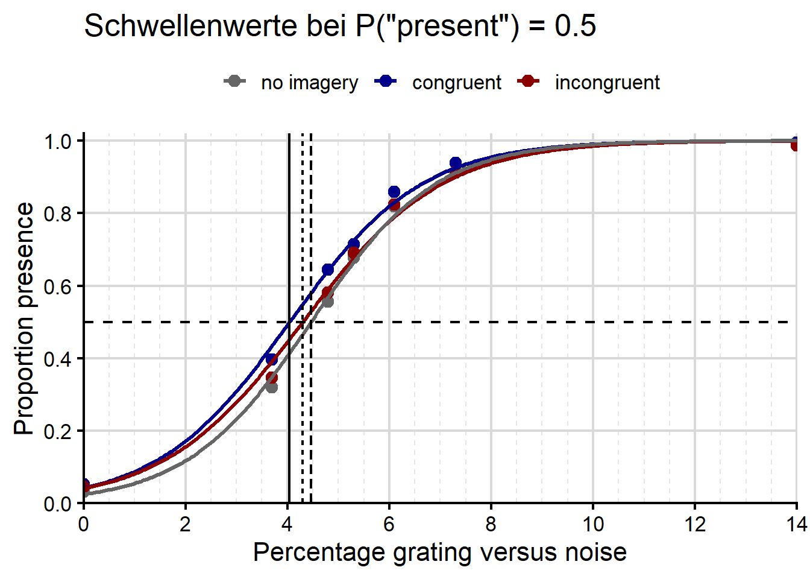
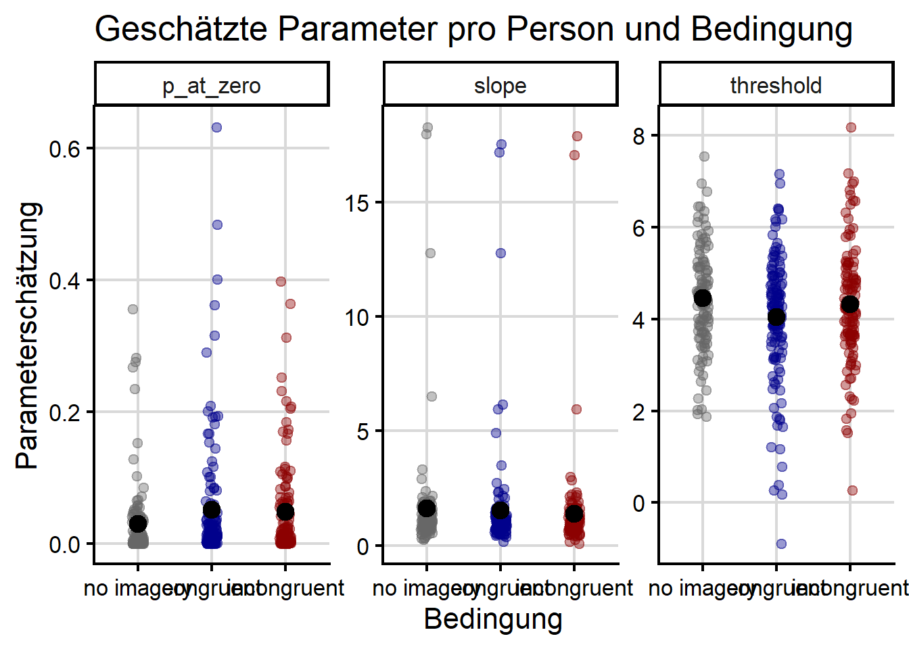

data/data_dijkstra_course.csvPsychometrische Funktionen
CautionHands-on: Vorbereitung
Für diesen Teil benötigen Sie Ihre .Rmd- oder .qmd-Datei und den Datensatz data_dijkstra_course.csv.
Speichern Sie den Datensatz direkt in Ihrem data-Ordner:
Setup
library("tidyverse")Grundidee
Eine psychometrische Funktion beschreibt den Zusammenhang zwischen einer physikalischen Eigenschaft eines Stimulus und dem Verhalten einer Person.
Beispiele:
| Physikalische Eigenschaft | Verhalten |
|---|---|
| Kontrast eines Bildes | Wahrscheinlichkeit, das Bild zu sehen |
| Lautstärke eines Tons | Wahrscheinlichkeit, den Ton zu hören |
| Dauer eines Reizes | Wahrscheinlichkeit, den Reiz korrekt zu erkennen |
| Unterschied zwischen zwei Orientierungen | Wahrscheinlichkeit einer korrekten Antwort |
In unserem Beispiel interessiert uns:
Wie verändert die Sichtbarkeit eines Gratings die Wahrscheinlichkeit, dass Personen mit “present” antworten?
Eine typische psychometrische Funktion ist S-förmig:
- bei sehr schwachen Reizen ist die Antwortwahrscheinlichkeit niedrig
- bei mittleren Reizen steigt sie stark an
- bei starken Reizen nähert sie sich einem Maximum
Die logistische Funktion
Hier verwenden wir eine logistische Funktion. Sie kann in R direkt mit glm() implementiert werden.
Die Grundform lautet:
\[ F(I)=\frac{1}{1+\exp\left(-\frac{I-m}{s}\right)} \]
Dabei ist:
| Symbol | Bedeutung |
|---|---|
| \(I\) | Reizstärke, zum Beispiel Sichtbarkeit |
| \(m\) | Mittelpunkt der Funktion |
| \(s\) | Skalenparameter; hängt mit der Steilheit zusammen |
Die Funktion gibt Werte zwischen 0 und 1 zurück.
I <- seq(0, 1, length.out = 100)
m <- 0.5
s <- 0.1
F_i <- 1 / (1 + exp(-(I - m) / s))
plot(
I, F_i,
type = "l",
lwd = 3,
ylim = c(0, 1),
xlab = "Reizstärke",
ylab = "Wahrscheinlichkeit",
main = "Logistische Funktion"
)
Bedeutung von m
Der Parameter m verschiebt die Funktion nach links oder rechts.
Bei I = m ist die logistische Funktion genau 0.5.
1 / (1 + exp(-(m - m) / s))[1] 0.5Wenn m kleiner ist, liegt die Kurve weiter links. Das bedeutet:
Die Person braucht weniger Reizstärke, um dieselbe Antwortwahrscheinlichkeit zu erreichen.
Wenn m grösser ist, liegt die Kurve weiter rechts. Das bedeutet:
Die Person braucht mehr Reizstärke.
d_m <- tibble(
I = rep(seq(0, 1, length.out = 100), times = 3),
m = rep(c(0.3, 0.5, 0.7), each = 100),
s = 0.1
) |>
mutate(
P = plogis((I - m) / s),
m = factor(m)
)
ggplot(d_m, aes(x = I, y = P, linetype = m)) +
geom_line(linewidth = 1.1) +
coord_cartesian(ylim = c(0, 1)) +
labs(
x = "Reizstärke",
y = "Wahrscheinlichkeit",
linetype = "m",
title = "Der Parameter m verschiebt die Funktion"
) +
theme_classic(base_size = 14)
Bedeutung von s
Der Parameter s verändert die Steilheit der Funktion.
Ein kleines s bedeutet:
Die Funktion ist steil. Die Antwortwahrscheinlichkeit verändert sich schnell.
Ein grosses s bedeutet:
Die Funktion ist flacher. Die Antwortwahrscheinlichkeit verändert sich langsamer.
d_s <- tibble(
I = rep(seq(0, 1, length.out = 100), times = 3),
s = rep(c(0.05, 0.10, 0.15), each = 100),
m = 0.5
) |>
mutate(
P = plogis((I - m) / s),
s = factor(s)
)
ggplot(d_s, aes(x = I, y = P, linetype = s)) +
geom_line(linewidth = 1.1) +
coord_cartesian(ylim = c(0, 1)) +
labs(
x = "Reizstärke",
y = "Wahrscheinlichkeit",
linetype = "s",
title = "Der Parameter s verändert die Steilheit"
) +
theme_classic(base_size = 14)
CautionHands-on 1: Parameter verändern
Verändern Sie im folgenden Code die Werte von m und s.
I <- seq(0, 1, length.out = 100)
m <- 0.5
s <- 0.1
F_i <- 1 / (1 + exp(-(I - m) / s))
plot(
I, F_i,
type = "l",
lwd = 3,
ylim = c(0, 1),
xlab = "Reizstärke",
ylab = "Wahrscheinlichkeit"
)Welche psychologischen oder experimentellen Faktoren könnten dazu führen, den
mParameter zu ändern?Welche psychologischen oder experimentellen Faktoren könnten dazu führen,den
sParameter zu ändern?Wäre eine Antworttendenz, häufiger “present” zu sagen, gut durch
modersbeschrieben?Welche Veränderung würde man erwarten, wenn congruent imagery die Detektion tatsächlich erleichtert?
Ratewahrscheinlichkeit und Lapse-Rate
Die logistische Grundfunktion geht von 0 bis 1. In vielen Experimenten ist aber auch wichtig, ob Personen bei sehr schwachen Reizen raten oder bei sehr starken Reizen trotzdem Fehler machen.
Die Ratewahrscheinlichkeit wird oft mit \(\gamma\) bezeichnet. Sie ist die untere Grenze der Funktion.
Die Lapse-Rate wird oft mit \(\lambda\) bezeichnet. Sie beschreibt Fehler bei sehr einfachen Trials und bestimmt die obere Grenze der Funktion.
Eine allgemeinere psychometrische Funktion lautet:
\[ P(\text{Antwort}) = \gamma + (1-\gamma-\lambda)F(I) \]
Dabei ist \(F(I)\) die S-förmige Funktion, zum Beispiel die logistische Funktion.
I_values <- seq(0, 1, length.out = 300)
m <- 0.5
s <- 0.1
asymptote_examples <- tibble(
I = rep(I_values, times = 4),
setting = rep(
c(
"gamma = 0, lambda = 0",
"gamma = 0.5, lambda = 0",
"gamma = 0, lambda = 0.1",
"gamma = 0.5, lambda = 0.1"
),
each = length(I_values)
)
) |>
mutate(
gamma = case_when(
setting %in% c("gamma = 0.5, lambda = 0",
"gamma = 0.5, lambda = 0.1") ~ 0.5,
TRUE ~ 0
),
lambda = case_when(
setting %in% c("gamma = 0, lambda = 0.1",
"gamma = 0.5, lambda = 0.1") ~ 0.1,
TRUE ~ 0
),
F = plogis((I - m) / s),
P = gamma + (1 - gamma - lambda) * F
)
ggplot(asymptote_examples, aes(x = I, y = P, color = setting)) +
geom_line(linewidth = 1.2) +
scale_y_continuous(
limits = c(0, 1),
breaks = seq(0, 1, by = 0.2)
) +
labs(
x = "Reizstärke",
y = "Antwortwahrscheinlichkeit",
color = "Parameter",
title = "Untere und obere Grenze der Funktion"
) +
theme_classic(base_size = 14)
CautionHands-on 2: Welche Hypothese passt zu welcher Kurve?
In welchen Arten von Aufgaben könnten wir Kurven beobachten, die der blauen oder der violetten Kurve ähneln?
Was könnten die Violete und Grüne Kurven in einem Experiment bedeuten?
Warum wären die violeten und blauen Kurven problematisch, wenn wir reine Detektionsleistung messen wollen?
Daten einlesen
Jetzt lesen wir die Kursdaten ein.
d_raw <- read_csv("data/data_dijkstra_course.csv")Rows: 33913 Columns: 15
── Column specification ────────────────────────────────────────────────────────
Delimiter: ","
chr (9): id, detectOri, imagineOri, stimulus, congruency, response, vivid, c...
dbl (6): block, trial, present, visLevel, corr, rt
ℹ Use `spec()` to retrieve the full column specification for this data.
ℹ Specify the column types or set `show_col_types = FALSE` to quiet this message.glimpse(d_raw)Rows: 33,913
Columns: 15
$ id <chr> "sub-001", "sub-001", "sub-001", "sub-001", "sub-001", "sub…
$ block <dbl> 3, 3, 3, 3, 3, 3, 3, 3, 3, 3, 3, 3, 3, 3, 3, 3, 3, 3, 3, 3,…
$ trial <dbl> 3, 7, 39, 14, 41, 40, 21, 19, 25, 17, 30, 36, 35, 2, 10, 27…
$ detectOri <chr> "right", "right", "right", "right", "right", "right", "righ…
$ imagineOri <chr> "none", "none", "none", "none", "none", "none", "none", "no…
$ present <dbl> 1, 1, 1, 1, 1, 1, 1, 1, 1, 1, 1, 0, 1, 1, 1, 1, 0, 1, 1, 1,…
$ stimulus <chr> "present", "present", "present", "present", "present", "pre…
$ congruency <chr> "none", "none", "none", "none", "none", "none", "none", "no…
$ visLevel <dbl> 7.3, 14.0, 7.3, 14.0, 6.1, 4.8, 5.3, 5.3, 4.8, 3.7, 5.3, 0.…
$ response <chr> "present", "present", "present", "present", "present", "pre…
$ corr <dbl> 1, 1, 1, 1, 1, 1, 0, 1, 1, 0, 1, 1, 1, 1, 1, 1, 1, 1, 1, 1,…
$ rt <dbl> 2.7318830, 0.6142205, 0.4590891, 0.2960492, 0.3531216, 0.39…
$ vivid <chr> "None", "None", "None", "None", "None", "None", "None", "No…
$ compliance <chr> "down", "down", "down", "down", "down", "down", "down", "do…
$ complied <chr> "yes", "yes", "yes", "yes", "yes", "yes", "yes", "yes", "ye…Die wichtigsten Variablen sind:
| Variable | Bedeutung |
|---|---|
id |
Versuchsperson |
congruency |
Imagery Bedingung: congruent, incongruent, none |
visLevel |
Sichtbarkeit/Reizstärke |
response |
Antwort: present oder absent |
present |
ob ein Stimulus tatsächlich präsentiert wurde |
corr |
ob die Antwort korrekt war |
complied |
ob die Person die Imagery-Instruktion befolgt hat |
Daten vorbereiten
Wir erstellen eine sauberere Version des Datensatzes.
Dabei machen wir drei Dinge:
- Wir behalten nur Trials, in denen die Person die Instruktion befolgt hat.
- Wir benennen die Bedingungen etwas schöner.
- Wir erstellen eine neue Variable
seen, die1ist, wenn die Person “present” geantwortet hat.
d <- d_raw |>
filter(complied == "yes") |>
mutate(
visLevel = as.numeric(visLevel),
condition = case_when(
congruency == "congruent" ~ "congruent",
congruency == "incongruent" ~ "incongruent",
congruency == "none" ~ "no imagery"
),
condition = factor(
condition,
levels = c("no imagery", "congruent", "incongruent")
),
seen = case_when(
response == "present" ~ 1,
response == "absent" ~ 0
)
)d |>
count(condition, response)# A tibble: 6 × 3
condition response n
<fct> <chr> <int>
1 no imagery absent 3250
2 no imagery present 5131
3 congruent absent 3585
4 congruent present 6763
5 incongruent absent 3430
6 incongruent present 5675Rohdaten zusammenfassen
Für eine psychometrische Funktion wollen wir wissen:
Wie häufig antworten Personen bei jeder Reizstärke mit “present”?
Dazu berechnen wir den Anteil von seen pro Bedingung und Sichtbarkeitslevel.
d_summary <- d |>
group_by(condition, visLevel) |>
summarise(
n = n(),
n_seen = sum(seen),
p_seen = mean(seen),
.groups = "drop"
)
d_summary# A tibble: 21 × 5
condition visLevel n n_seen p_seen
<fct> <dbl> <int> <dbl> <dbl>
1 no imagery 0 1209 39 0.0323
2 no imagery 3.7 1210 387 0.320
3 no imagery 4.8 1214 676 0.557
4 no imagery 5.3 1210 819 0.677
5 no imagery 6.1 1201 983 0.818
6 no imagery 7.3 1195 1091 0.913
7 no imagery 14 1142 1136 0.995
8 congruent 0 1496 79 0.0528
9 congruent 3.7 1494 593 0.397
10 congruent 4.8 1495 964 0.645
# ℹ 11 more rowsPsychometrische Funktionen als Rohdatenplot
Wir definieren ein kleines Theme, damit alle psychometrischen Funktionen ähnlich aussehen.
condition_cols <- c(
"no imagery" = "grey40",
"congruent" = "darkblue",
"incongruent" = "darkred"
)
theme_psychometric <- function(){
theme_classic(base_size = 16) +
theme(
panel.grid.major.x = element_line(color = "grey85"),
panel.grid.minor.x = element_line(color = "grey90", linetype = "dashed"),
panel.grid.major.y = element_line(color = "grey85"),
legend.position = "top",
legend.title = element_blank(),
plot.title = element_text(face = "plain")
)
}Zuerst plotten wir nur die beobachteten Anteile.
ggplot(d_summary, aes(x = visLevel, y = p_seen, color = condition)) +
geom_point(size = 3) +
geom_line(linewidth = 1.1) +
scale_color_manual(values = condition_cols) +
scale_x_continuous(
limits = c(0, 14),
breaks = seq(0, 14, by = 2),
minor_breaks = seq(0, 14, by = 0.5),
expand = c(0, 0)
) +
scale_y_continuous(
limits = c(0, 1.02),
breaks = seq(0, 1, by = 0.2),
expand = c(0, 0)
) +
labs(
x = "Percentage grating versus noise",
y = "Proportion presence",
color = "Bedingung",
title = "Beobachtete psychometrische Funktionen"
) +
theme_psychometric()
Interpretation:
- Bei
visLevel = 0war kein Stimulus vorhanden. - Der Anteil von “present”-Antworten bei
visLevel = 0entspricht ungefähr der False-Alarm-Rate. - Mit steigender Sichtbarkeit steigt die Wahrscheinlichkeit einer “present”-Antwort.
- Wenn Imagery die Detektion erleichtert, sollte die Kurve nach links verschoben sein.
Warum müssen wir eine Funktion fitten?
Der Rohdatenplot ist wichtig. Er zeigt uns, was in den Daten passiert.
Wenn wir Bedingungen genauer vergleichen wollen, brauchen wir eine psychometrische Funktion.
Diese Funktion hilft uns, aus den Rohdaten konkrete Werte zu schätzen:
- Wie steil ist die Kurve?
- Welche Bedingung hat die niedrigste Schwelle?
- Sind die Unterschiede zwischen Bedingungen statistisch zuverlässig?
Dafür müssen wir eine Funktion an die Daten fitten.
Die Idee ist:
Wir suchen die Kurve, die die beobachteten Antworten am besten erklärt.
Maximum Likelihood: die Grundidee
Beim Fitten müssen wir die Parameter der Funktion schätzen.
Für die einfache logistische Funktion sind das zum Beispielm und s.
Wir kennen diese Parameter bei echten Daten nicht. Maximum Likelihood ist eine Methode, um passende Werte für diese Parameter zu finden.
Die Grundidee ist:
Das Modell wählt Werte für die Parameter, zum Beispiel
m = 5unds = 1.Mit diesen Parametern sagt das Modell für jeden Trial eine Wahrscheinlichkeit für eine “present” Antwort vorher.
Dann wird geprüft, wie gut diese vorhergesagten Wahrscheinlichkeiten zu den tatsächlichen Antworten passen.
Maximum Likelihood sucht die Parameterwerte, bei denen die beobachteten Antworten insgesamt am wahrscheinlichsten sind.
Beispiel:
Das Modell sagt für einen Trial: Die Wahrscheinlichkeit für eine “present” Antwort beträgt 0.80.
Wenn die Person tatsächlich “present” antwortet, passt diese Antwort gut zum Modell.
Wenn die Person “absent” antwortet, passt diese Antwort weniger gut zum Modell.
Über alle Trials hinweg sucht Maximum Likelihood also die Parameter, die die beobachteten Antworten am besten erklären.
Für binäre Antworten lautet die Likelihood:
\[ L = \prod_{i=1}^{n} P(I_i)^{y_i} [1-P(I_i)]^{1-y_i} \]
Dabei ist:
| Symbol | Bedeutung |
|---|---|
| \(i\) | Trialnummer |
| \(I_i\) | Reizstärke in Trial \(i\) |
| \(y_i\) | beobachtete Antwort, 0 oder 1 |
| \(P(I_i)\) | vorhergesagte Wahrscheinlichkeit für Antwort 1 |
In der Praxis verwendet man meistens die Log-Likelihood:
\[ \log L = \sum_{i=1}^{n} \left[ y_i \log(P(I_i)) + (1-y_i)\log(1-P(I_i)) \right] \]
Die gute Nachricht:
Wir müssen diese Gleichung nicht von Hand maximieren.
glm()macht das für uns.
Logistische Regression als psychometrische Funktion
Eine logistische Regression passt eine S-förmige Kurve an solche binären Daten mit Maximum Likelihood an.
Bei uns ist die abhängige Variable seen:
seen = 1: Person antwortete “present”seen = 0: Person antwortete “absent”
Das Modell lautet:
\[ \text{logit}(P(\text{"present"})) = b_0 + b_1 \cdot \text{visLevel} \]
Das bedeutet:
b0ist der Intercept.b1beschreibt, wie stark die “present” Wahrscheinlichkeit mit Sichtbarkeit zunimmt.
Eine psychometrische Funktion pro Bedingung fitten
Wir fitten nun ein Modell mit visLevel, condition und ihrer Interaktion.
Die Interaktion erlaubt, dass jede Bedingung eine eigene Kurve hat.
fit_glm <- glm(
seen ~ visLevel * condition,
data = d,
family = binomial
)Dieser Output ist für uns nicht so Wichtig. Wichtig ist:
Das Modell hat jetzt für jede Bedingung eine psychometrische Funktion gefitted.
Vorhersagen aus dem Modell
Jetzt plotten wir beobachtete Datenpunkte und gefittete Kurven zusammen.
d_pred <- crossing(
visLevel = seq(min(d$visLevel), max(d$visLevel), length.out = 300),
condition = levels(d$condition)
)
d_pred <- d_pred |>
mutate(
pred = predict(fit_glm, newdata = d_pred, type = "response")
)
ggplot(d_summary, aes(x = visLevel, y = p_seen, color = condition)) +
geom_point(size = 3) +
geom_line(
data = d_pred,
aes(x = visLevel, y = pred, color = condition),
linewidth = 1.1
) +
scale_color_manual(values = condition_cols) +
scale_x_continuous(
limits = c(0, 14),
breaks = seq(0, 14, by = 2),
minor_breaks = seq(0, 14, by = 0.5),
expand = c(0, 0)
) +
scale_y_continuous(
limits = c(0, 1.02),
breaks = seq(0, 1, by = 0.2),
expand = c(0, 0)
) +
labs(
x = "Percentage grating versus noise",
y = "Proportion presence",
color = "Bedingung",
title = "Gefittete psychometrische Funktionen"
) +
theme_psychometric()
CautionHands-on 3:
Schauen Sie sich die gefitteten Kurven an.
Denken Sie, wir haben die Befunde von Dijkstra et al. (2022) Repliziert?
Modellparameter pro Bedingung extrahieren
Das Modell schätzt für jede Bedingung eine eigene Kurve.
Für jede Kurve brauchen wir zwei Werte:
intercept: der Modellwert beivisLevel = 0slope: wie stark die Kurve mitvisLevelansteigt
glm() gibt diese Werte aber nicht direkt als fertige Tabelle pro Bedingung aus. Stattdessen verwendet R eine Ausgangsbedingung.
In unserem Fall ist no imagery die Ausgangsbedingung. Der folgende Code berechnet daraus die Parameter pro Bedingung.
coefs <- coef(fit_glm)
params_group <- tibble(
condition = levels(d$condition),
intercept = c(
coefs["(Intercept)"],
coefs["(Intercept)"] + coefs["conditioncongruent"],
coefs["(Intercept)"] + coefs["conditionincongruent"]
),
slope = c(
coefs["visLevel"],
coefs["visLevel"] + coefs["visLevel:conditioncongruent"],
coefs["visLevel"] + coefs["visLevel:conditionincongruent"]
)
) |>
mutate(
threshold = -intercept / slope,
p_at_zero = plogis(intercept)
)
params_group# A tibble: 3 × 5
condition intercept slope threshold p_at_zero
<chr> <dbl> <dbl> <dbl> <dbl>
1 no imagery -3.65 0.819 4.46 0.0252
2 congruent -3.12 0.771 4.04 0.0424
3 incongruent -3.15 0.733 4.30 0.0411Die wichtigsten Spalten sind:
| Spalte | Bedeutung |
|---|---|
threshold |
geschätzte Sichtbarkeit bei 50% “present” Antworten |
slope |
Steilheit der Kurve; höhere Werte bedeuten eine steilere Kurve |
p_at_zero |
geschätzte “present”-Wahrscheinlichkeit bei visLevel = 0 |
Interpretation:
- Ein niedrigerer
thresholdbedeutet: weniger Sichtbarkeit ist nötig. - Ein grösserer
slopebedeutet: die Kurve steigt steiler an. - Ein höheres
p_at_zerobedeutet: mehr “present”-Antworten, obwohl kein Signal vorhanden ist.
Schwellenwerte plotten
ggplot(d_summary, aes(x = visLevel, y = p_seen, color = condition)) +
geom_point(size = 3) +
geom_line(
data = d_pred,
aes(x = visLevel, y = pred, color = condition),
linewidth = 1.1
) +
geom_hline(yintercept = 0.5, linetype = "dashed") +
geom_vline(
data = params_group,
aes(xintercept = threshold, linetype = condition),
color = "black"
) +
scale_color_manual(values = condition_cols) +
scale_x_continuous(
limits = c(0, 14),
breaks = seq(0, 14, by = 2),
minor_breaks = seq(0, 14, by = 0.5),
expand = c(0, 0)
) +
scale_y_continuous(
limits = c(0, 1.02),
breaks = seq(0, 1, by = 0.2),
expand = c(0, 0)
) +
guides(
linetype = "none")+
labs(
x = "Percentage grating versus noise",
y = "Proportion presence",
color = "Bedingung",
linetype = "Bedingung",
title = 'Schwellenwerte bei P("present") = 0.5'
) +
theme_psychometric()
Statistik: Parameter pro Person vergleichen
Bisher haben wir eine Kurve für die ganze Gruppe gefittet. Das ist gut für die Abbildung.
Für Statistik brauchen wir aber Werte pro Person. Deshalb fitten wir nun für jede Person und jede Bedingung eine eigene logistische Funktion.
fit_one_psychometric <- function(dat){
fit <- glm(
seen ~ visLevel,
data = dat,
family = binomial
)
b0 <- coef(fit)["(Intercept)"]
b1 <- coef(fit)["visLevel"]
tibble(
intercept = b0,
slope = b1,
threshold = -b0 / b1,
p_at_zero = plogis(b0)
)
}Funktionen pro Person und Bedingung fitten
params_id <- d |>
group_by(id, condition) |>
group_modify(~ fit_one_psychometric(.x)) |>
ungroup()
params_id# A tibble: 373 × 6
id condition intercept slope threshold p_at_zero
<chr> <fct> <dbl> <dbl> <dbl> <dbl>
1 sub-001 no imagery -6.09 1.46 4.16 0.00226
2 sub-001 congruent -0.897 0.737 1.22 0.290
3 sub-001 incongruent -3.14 0.855 3.67 0.0414
4 sub-002 no imagery -0.936 0.354 2.65 0.282
5 sub-002 congruent -0.0647 0.359 0.180 0.484
6 sub-002 incongruent -0.788 0.260 3.03 0.313
7 sub-003 no imagery -2.57 0.633 4.05 0.0714
8 sub-003 congruent -4.07 1.06 3.86 0.0168
9 sub-003 incongruent -2.18 0.707 3.08 0.102
10 sub-004 no imagery -4.58 0.984 4.65 0.0102
# ℹ 363 more rowsJetzt hat jede Versuchsperson pro Bedingung eigene Parameter.
params_id |>
count(condition)# A tibble: 3 × 2
condition n
<fct> <int>
1 no imagery 116
2 congruent 134
3 incongruent 123Parameter plotten
params_long <- params_id |>
pivot_longer(
cols = c(threshold, slope, p_at_zero),
names_to = "parameter",
values_to = "estimate"
)
ggplot(params_long, aes(x = condition, y = estimate, color = condition)) +
geom_point(
position = position_jitter(width = 0.08, height = 0),
alpha = 0.4
) +
stat_summary(
fun = mean,
geom = "point",
size = 4,
color = "black"
) +
stat_summary(
fun.data = mean_se,
geom = "errorbar",
width = 0.15,
color = "black"
) +
facet_wrap(~ parameter, scales = "free_y") +
scale_color_manual(values = condition_cols) +
labs(
x = "Bedingung",
y = "Parameterschätzung",
title = "Geschätzte Parameter pro Person und Bedingung"
) +
theme_psychometric() +
theme(legend.position = "none")
Interpretation:
- Wenn sich vor allem
thresholdunterscheidet, spricht das für eine horizontale Verschiebung der Funktion. - Wenn sich vor allem
slopeunterscheidet, spricht das für eine Veränderung der Sensitivität. - Wenn sich vor allem
p_at_zerounterscheidet, spricht das eher für Unterschiede in “present”-Antworten ohne Signal.
Statistische Tests
Wir testen nun, ob sich die geschätzten Parameter zwischen Bedingungen unterscheiden.
Da jede Person in allen drei Bedingungen gemessen wurde, verwenden wir eine Messwiederholungs-ANOVA.
Test 1: Unterscheidet sich der Schwellenwert?
threshold_aov <- aov(
threshold ~ condition + Error(id / condition),
data = params_id
)Warning in aov(threshold ~ condition + Error(id/condition), data = params_id):
Error() model is singularsummary(threshold_aov)
Error: id
Df Sum Sq Mean Sq F value Pr(>F)
condition 2 0.0 0.015 0.004 0.996
Residuals 135 457.1 3.386
Error: id:condition
Df Sum Sq Mean Sq F value Pr(>F)
condition 2 11.02 5.512 10.71 3.57e-05 ***
Residuals 233 119.98 0.515
---
Signif. codes: 0 '***' 0.001 '**' 0.01 '*' 0.05 '.' 0.1 ' ' 1Test 2: Unterscheidet sich die Steilheit?
slope_aov <- aov(
slope ~ condition + Error(id / condition),
data = params_id
)Warning in aov(slope ~ condition + Error(id/condition), data = params_id):
Error() model is singularsummary(slope_aov)
Error: id
Df Sum Sq Mean Sq F value Pr(>F)
condition 2 15.2 7.578 0.939 0.394
Residuals 135 1089.5 8.070
Error: id:condition
Df Sum Sq Mean Sq F value Pr(>F)
condition 2 4.0 2.020 0.489 0.614
Residuals 233 961.9 4.128 Test 3: Unterscheidet sich die “present” Wahrscheinlichkeit bei 0?
p0_aov <- aov(
p_at_zero ~ condition + Error(id / condition),
data = params_id
)Warning in aov(p_at_zero ~ condition + Error(id/condition), data = params_id):
Error() model is singularsummary(p0_aov)
Error: id
Df Sum Sq Mean Sq F value Pr(>F)
condition 2 0.0452 0.02261 1.944 0.147
Residuals 135 1.5700 0.01163
Error: id:condition
Df Sum Sq Mean Sq F value Pr(>F)
condition 2 0.0172 0.008601 2.688 0.0702 .
Residuals 233 0.7457 0.003200
---
Signif. codes: 0 '***' 0.001 '**' 0.01 '*' 0.05 '.' 0.1 ' ' 1Paarweise Tests für den Schwellenwert
Die ANOVA sagt uns, ob es insgesamt einen Unterschied zwischen den Bedingungen gibt.
Oft wollen wir danach wissen, welche Bedingungen sich unterscheiden.
Dafür verwenden wir gepaarte t-Tests, weil dieselben Personen in allen Bedingungen gemessen wurden.
Zuerst bringen wir die Daten ins breite Format. Dann stehen die drei Bedingungen einer Person in derselben Zeile.
threshold_wide <- params_id |>
select(id, condition, threshold) |>
pivot_wider(
names_from = condition,
values_from = threshold
) |>
drop_na()
threshold_wide# A tibble: 104 × 4
id `no imagery` congruent incongruent
<chr> <dbl> <dbl> <dbl>
1 sub-001 4.16 1.22 3.67
2 sub-002 2.65 0.180 3.03
3 sub-003 4.05 3.86 3.08
4 sub-004 4.65 4.46 4.73
5 sub-007 5.15 4.37 4.85
6 sub-008 4.41 4.95 4.39
7 sub-010 5.54 4.02 4.91
8 sub-011 4.31 2.58 4.17
9 sub-012 3.59 3.88 3.46
10 sub-013 3.85 3.88 3.71
# ℹ 94 more rowsJetzt können wir einfache gepaarte t-Tests rechnen.
t_cong_no <- t.test(
threshold_wide$congruent,
threshold_wide$`no imagery`,
paired = TRUE
)
t_cong_incong <- t.test(
threshold_wide$congruent,
threshold_wide$incongruent,
paired = TRUE
)
t_incong_no <- t.test(
threshold_wide$incongruent,
threshold_wide$`no imagery`,
paired = TRUE
)Wir sammeln die p-Werte in einer übersichtlichen Tabelle und korrigieren sie mit der Holm-Korrektur.
pairwise_threshold <- tibble(
comparison = c(
"congruent vs no imagery",
"congruent vs incongruent",
"incongruent vs no imagery"
),
p_raw = c(
t_cong_no$p.value,
t_cong_incong$p.value,
t_incong_no$p.value
)
) |>
mutate(
p_holm = p.adjust(p_raw, method = "holm")
)
pairwise_threshold# A tibble: 3 × 3
comparison p_raw p_holm
<chr> <dbl> <dbl>
1 congruent vs no imagery 0.0000108 0.0000324
2 congruent vs incongruent 0.00497 0.00993
3 incongruent vs no imagery 0.0594 0.0594 Verbindung zur Dijkstra-Studie
Die Dijkstra-Studie fragte, ob mentale Vorstellung die Wahrnehmung eines externen Stimulus verändert.
Drei Muster wären theoretisch möglich:
| Muster | Interpretation |
|---|---|
Unterschied in p_at_zero |
mögliche Antworttendenz oder mehr “present” ohne Signal |
Unterschied in slope |
Veränderung der Sensitivität |
Unterschied in threshold |
horizontale Verschiebung der psychometrischen Funktion |
Das zentrale Ergebnis der Dijkstra-Studie war:
Congruent imagery verschob die psychometrische Funktion nach links.
Das bedeutet:
Personen brauchten weniger externes Signal, um “present” zu antworten, wenn sie sich den passenden Stimulus vorstellten.
Wir replizieren das Hauptergebnis, da threshold signifikant kleiner für congruent imagery ist.